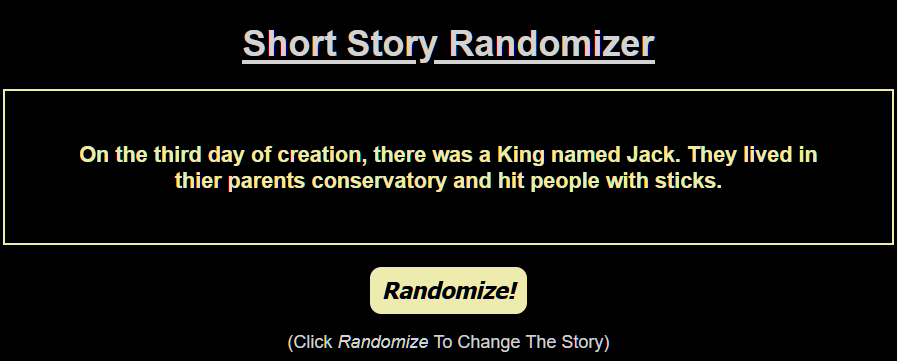
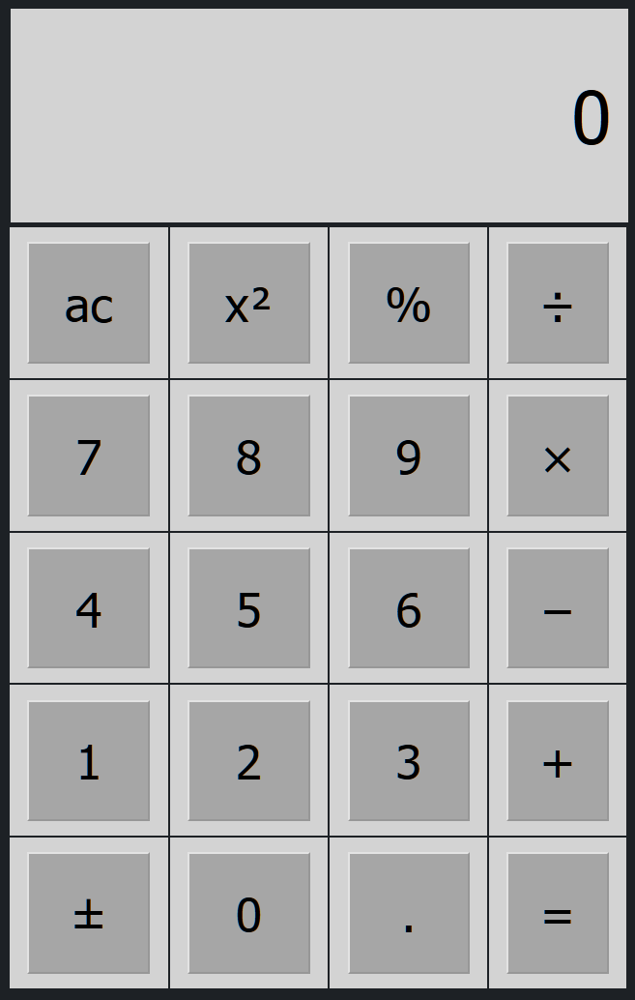

- About -
Hi! I'm Matt, currently following the Full-Stack Career Path by CodeCademy.
- Projects -
Short Story Generator
This is my solution to the Mixed Messages Portfolio Project, from CodeCademy. It uses five arrays of options and randomly picks one from each to make the final story.
Natural Spring Water
This a one page website for NATURAL (a fake brand of spring water). It features CSS that responsively scales the site to fit smaller screen sizes.
Simple Calculator
This is my simple HTML Calculator, it allowed me to learn the begins of CSS & JavaScript.
